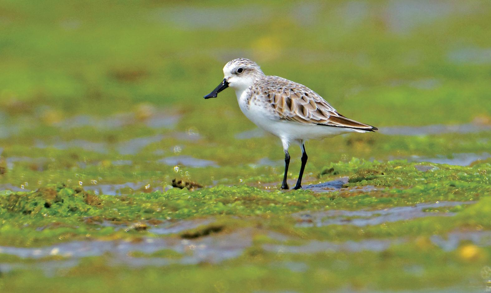
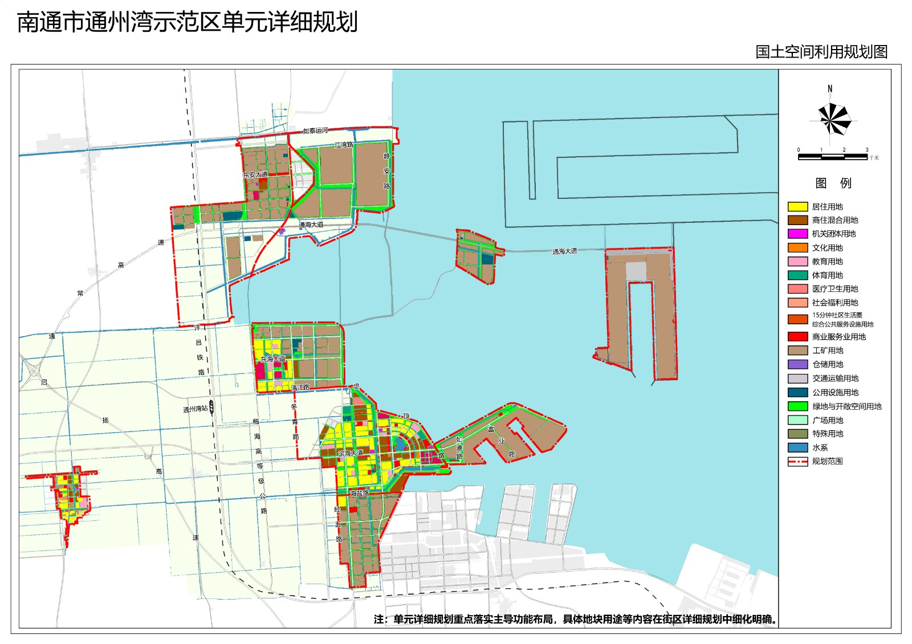

关注栖息地功能
除了保留面积，还要让觅食地与高潮栖息地保持可达、可用、相互连接。
01项目理念 / OUR APPROACH
这个项目以勺嘴鹬为切入点，探讨沿海开发如何改变栖息地功能，以及保护为何需要超越单一地点与静态边界。
除了保留面积，还要让觅食地与高潮栖息地保持可达、可用、相互连接。
迁徙连接多个地区。一个关键停歇地的变化，可能影响鸟类接下来的旅程。
将物种资料、研究文献与课程案例结合，让保护议题更容易理解和追溯。
02认识物种 / THE SPECIES
从辨识勺嘴鹬，到理解停歇地与能量补给。用几分钟，认识保护背后的生态联系。

物种笔记 / FIELD NOTE
Calidris pygmaea
停下来想一想 / KNOWLEDGE CHECK
选择一个答案，看看日常观察如何连接到保护问题。
一路相连 / A CONNECTED JOURNEY
点击节点，了解每一类栖息地的作用。
简化生态示意，非地理地图或个体追踪路线；江苏沿海属于黄海停歇区域。
03沿海案例 / COASTAL PRESSURES
开发与干扰可能改变鸟类利用空间的方式。栖息地功能的下降，往往通过距离、时间与能量成本逐步体现。
潮滩与安全的高潮停歇地之间距离增加，可能让鸟类花更多时间飞行，挤压觅食与恢复时间。
道路、施工、人类活动和照明等干扰，可能降低栖息地的可用性与可达性。
多处开发与持续干扰的共同影响，需要通过区域评估和长期监测来理解。

江苏 · 通州湾 / CASE STUDY
以课程收集的通州湾规划与沿海开发材料为例，思考开发布局与潮滩、高潮栖息地之间的空间关系。
课程案例用于解释潜在影响路径；具体项目影响仍需现场监测与评估。
案例影像 / VISUAL MATERIALS
点击图片，查看课程案例资料。
保护的关键，也在于栖息地之间能否保持连接，以及鸟类是否仍能安全地利用它们。
04保护策略 / CONSERVATION IN PRACTICE
从空间规划到长期监测，以下六个方向将栖息地功能转化为可讨论的保护思路。
把觅食地与高潮栖息地作为一个整体，保留鸟类使用空间的连接。
在规划中关注往返距离，并减少道路、工地和照明带来的干扰。
综合多处项目与长期变化，理解破碎化和栖息地可用性的共同影响。
关注鸟类数量、停歇时长与潮滩利用，并用观测反馈改进措施。
将地方保护与迁飞区尺度的规划和信息共享连接起来。
管理人流、车流、噪声和夜间灯光，让已有栖息地更容易被利用。
05参与行动 / SMALL STEPS, SHARED KNOWLEDGE
了解、记录与传播，都是参与保护讨论的方式。
把这条生态联系带走
破碎化 → 往返距离增加 → 能量成本上升 → 觅食与恢复时间减少 → 潜在长期影响
06资料与来源 / THE READING ROOM
物种资料、研究文献与课程补充材料，为进一步阅读提供入口。
勺嘴鹬物种评估与受威胁等级
迁徙滨鸟种群下降与黄海潮滩停歇地的关系
2025 年 MOP12 会议文件 · 迁飞区保护背景
勺嘴鹬物种概览与延伸资料
“>65%”为 2017 年文献报告的历史潮滩缩减背景，并非实时监测值或本项目计算结果。
延伸观看：滨鸟主题动画案例影像 / VISUAL MATERIALS
← → 切换图片 · Esc 关闭